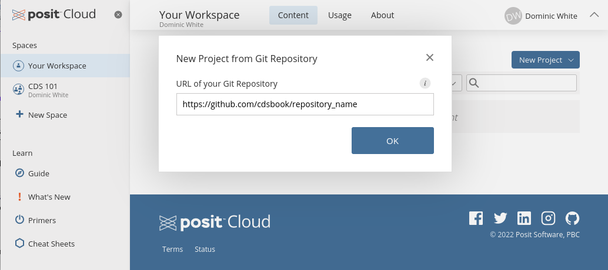
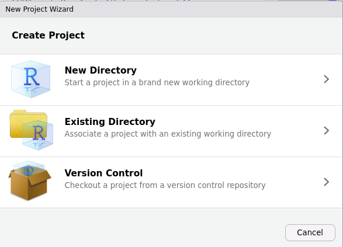
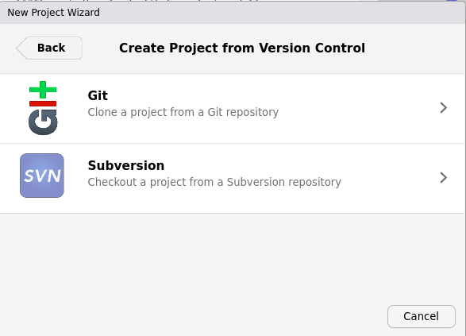
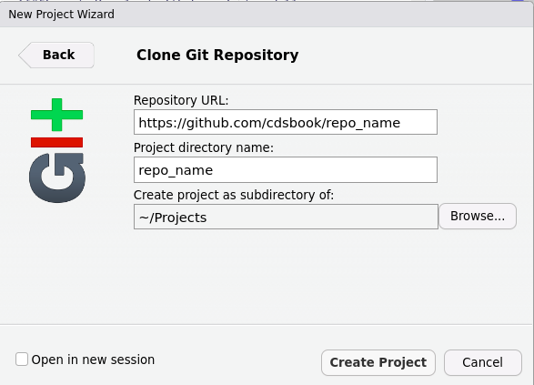

Appendix B — Additional Software Set-up
B.1 How to clone a GitHub repository into RStudio
B.1.1 In RStudio Cloud
- From your homepage, click on the New Project button in the top right of the screen (Figure B.1)
- In the drop-down menu, click on the option that says “New Project from Git Repository” (Figure B.2).
- In the pop-up window, paste in the URL (web address) of the GitHub repository that you wish to open in RStudio (Figure B.3).

B.1.2 In RStudio Desktop
Click on the New Project option in the Files dropdown menu).
In the New Project wizard that pops up, click on the option that says “Version Control” (Figure B.4)

- On the next page of the wizard, click on the “Git” option (Figure B.5)

- On the final page of the wizard (Figure B.6), fill in the details for the GitHub repository you wish to “clone” (i.e. download), and where to download it to:

In the first field (“Repository URL”) copy-and-paste the web address of the GitHub repository’s homepage.
The second field will be the name of the folder created on your computer to hold all the files you are downloading from the GitHub repository. It may auto-fill with the repository’s name - you can also type something in, or change it to a different folder name if you prefer.
The third field is the name of the parent folder that will hold the folder above. I would recommend organizing related projects (e.g. the projects from this book) in a single parent folder so that they are easy to find. If you click “Browse” you can choose or create a parent folder to hold all your project folders.
Then click “Create Project”.
B.2 Connecting RStudio to GitHub on Linux
First, go to RStudio and open the tab in the left hand pane called Terminal. If you do not see a Terminal tab, then you can create one from the top menu of RStudio Desktop by going to “Tools > Terminal > New Terminal”.
In this terminal, set your GitHub username by running this line, making sure to replace your name inside the quotation marks:
git config --global user.name "Your Name Here"Then run this commend, again making sure to replace the email inside the quotation marks with the same email you used to sign up for GitHub:
git config --global user.email "you@emailHost.com"I would also recommend running one final line in the Terminal (this will enable your computer to store your GitHub login details - otherwise you will be typing them in a lot).
git config --global credential.helper storeThen go to the Console tab (which should be next to the Terminal), and copy and paste these lines of R code one at a time:
install.packages("usethis","gitcreds")then this line (which will open a GitHub web page - see below for what to fill in)
usethis::create_github_token()On the token webpage that appears, make sure that you are creating a “Classic token”, and not a “Fine-grained” token. Then you will need to set the following options:
In the Note field, write something that indicates where this token will be used, e.g.
RStudio.For the expiration date, pick a date about in the future after which you will no longer need the token. E.g. if you are following these instructions for a class, pick a date after the end of the semester.
You should not select no expiration date - that is a security risk.
You can leave all the checked scopes as the defaults, and then scroll down to the green Generate token button at the bottom of the webpage and click it.
The next page that appears will display a token, a random series of letters and numbers that is basically a temporary password that you can use to authorize a restricted set of activities on your GitHub account (without having to share your master password with RStudio). You will never see this token again after you leave this page, so don’t close the webpage until you have finished this section, or you will have to create an entirely new token.
Return to the Console tab in RStudio, and run this line:
gitcreds::gitcreds_set()At the prompt, copy and paste the token from GitHub and click enter.
(If you ever need to replace the token, just run
gitcreds::gitcreds_set()in the RStudio Console again.)